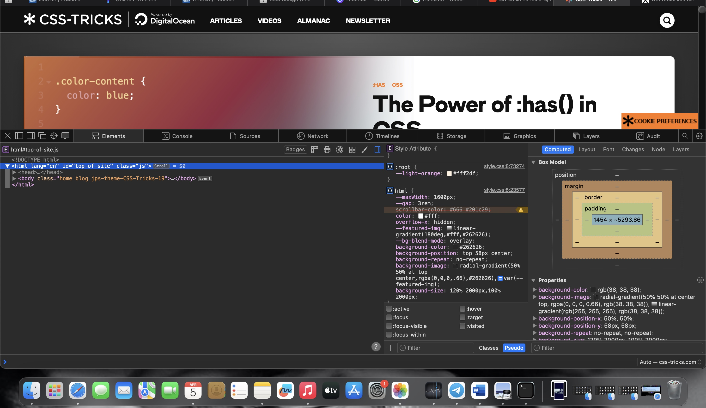

Research for and describe the ways to open developers console in Mozilla Firefox and Safari. new standard?
In Mozilla Firefox: 1. Right-click on the page and select "Inspect Element" from the context menu. 2. Click on the "Console" tab in the developer tools panel that appears.
In Safari: 1. Open the "Preferences" menu and go to the "Extensions" tab. 2. Enable the option "Show Develop menu in menu bar." 3. After that, a new option "Develop" will appear in the top menu. 4. In the "Develop" menu, select "Show JavaScript Console."
What way of including internal links into the HTML page you would consider generally preferable: absolute or relative links? Describe use cases for choosing absolute links and choosing relative links.
1. Absolute Links: These links specify the complete URL to the linked resource, including the protocol (http/https) and domain. They are generally preferred when linking to resources on external websites, or when you need to ensure that the link always points to the same location regardless of the current page's URL. Use Cases for Absolute Links: a. Linking to external websites or resources on a different domain (e.g., https://www.example.com/page) b. When the exact URL of the linked page is known and should not change (e.g., linking to specific articles on a news website)
2. Relative Links: These links specify the path to the linked resource relative to the current page's URL. They are generally preferred when linking to resources within the same website or directory structure. Use Cases for Relative Links: a. Linking to other pages within the same website (e.g., ../about.html, subfolder/page.html) b. When the structure of the website may change, and you want the links to adapt accordingly c. Simplifying link management as the linked resource's location can be specified relative to the current page In general, relative links are often preferred for internal linking within a website, as they allow for more flexible and maintainable page structures. However, absolute links are necessary when linking to external resources or when a fixed URL is required.
Research and write about image formats used in web-development. What is the difference between JPG, GIF and PNG formats? What is WEBP image type? What is SVG?
JPG (or JPEG): - JPG is a commonly used image format for photographs and complex images with many colors. - It supports a high degree of compression, making it suitable for reducing file size without significant loss of quality. - However, JPG uses lossy compression, which means that some details are lost during compression, making it less ideal for images with sharp lines and text.
GIF (Graphics Interchange Format): - GIF is a compressed image format that supports animations and transparent backgrounds. - It is well-suited for images with flat colors, simple shapes, and text, as well as for short animations and icons. - GIF uses lossless compression, preserving image quality, but it is less efficient for complex images containing many colors.
PNG (Portable Network Graphics): - PNG is a versatile image format that supports botch lossless compression and alpha transparency, making it suitable for images with complex transparency effects. - It is often used for web graphics, logos, and images with sharp lines and text. - PNG is preferred for images that require high quality and transparent backgrounds, but it may result in larger file sizes compared to JPG.
WEBP: - WEBP is a modern image format developed by Google, designed to provide superior compression and quality compared to traditional formats like JPG and PNG. - It supports both lossy and lossless compression, as well as transparency and animation (WEBP animations are known as WAA - Web Animations Archive). - WEBP images typically have smaller file sizes without significant loss of quality, making them ideal for efficient web delivery.
SVG (Scalable Vector Graphics): - SVG is an image format based on XML that represents vector graphics, allowing images to be scaled without loss of quality. - It is well-suited for icons, logos, illustrations, and other graphical elements that need to retain crispness and clarity at various sizes. - SVG can be manipulated with CSS and JavaScript, making it a flexible choice for web development.
Include the screenshot you’ve created to the report. Optionally, float the image.
fevgvbehjnkmgtf vgctbwkjojuwgftfbvwgcfdc nmsmmshwnfj vgwvfvwrfcerx1rxe1x cqdrcvxgcrdcqghgfdcqfcd yg dycqtdcqcdtyqcdq
fevgvbehjnkmgtf vgctbwkjojuwgftfbvwgcfdc nmsmmshwnfj vgwvfvwrfcerx1rxe1x cqdrcvxgcrdcqghgfdcqfcd yg dycqtdcqcdtyqcdq
fevgvbehjnkmgtf vgctbwkjojuwgftfbvwgcfdc nmsmmshwnfj vgwvfvwrfcerx1rxe1x cqdrcvxgcrdcqghgfdcqfcd yg dycqtdcqcdtyqcdq
fevgvbehjnkmgtf vgctbwkjojuwgftfbvwgcfdc nmsmmshwnfj vgwvfvwrfcerx1rxe1x cqdrcvxgcrdcqghgfdcqfcd yg dycqtdcqcdtyqcdq
fevgvbehjnkmgtf vgctbwkjojuwgftfbvwgcfdc nmsmmshwnfj vgwvfvwrfcerx1rxe1x cqdrcvxgcrdcqghgfdcqfcd yg dycqtdcqcdtyqcdq